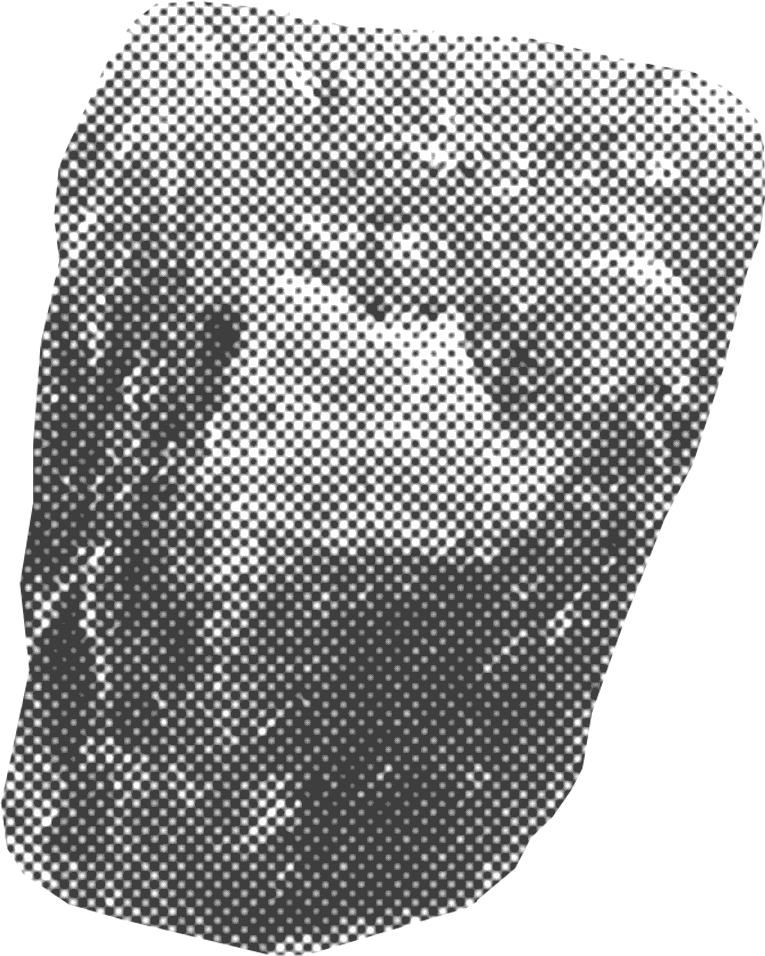
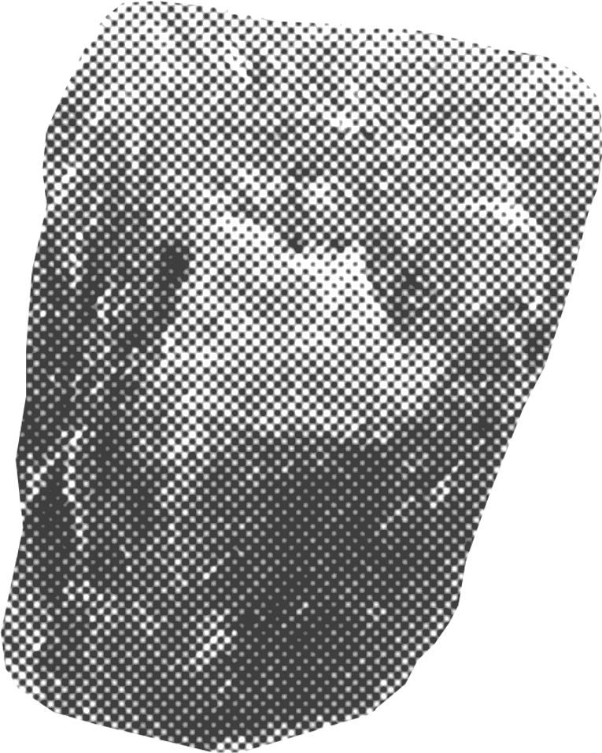
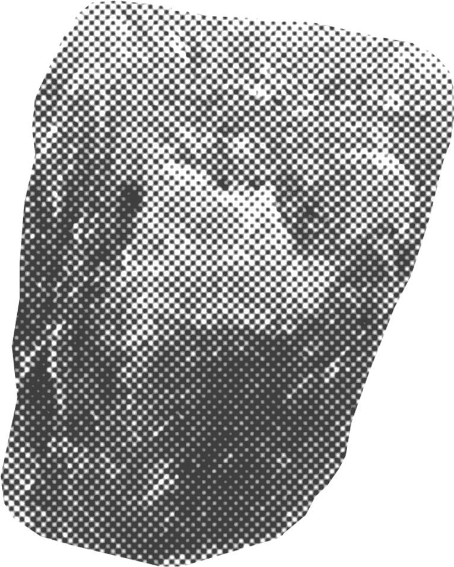

Мастерская керамики
Фрагмент
Фрагмент — мастерская керамики, которая предлагает человеку сместить фокус
с функциональности и полезности объекта на уникальность и случайность его формы, которую приобретает изделие, переданное
в руки природы. Физический процесс является показателем превосходства естественной силы
над искусственной.
Слепив изделие, человек погружает форму
(из самоотвердевающей глины)
в различные слои песка и гальки, тем самым создавая чувственную, физическую и временную дистанцию между материалом и собой, создателем. Предлагается полностью отказаться от вмешательства в судьбу объекта на этом этапе и доверить изделие
естественным силам.
Идея мастерской основана на художественном методе «Диалектика места и не-места» Роберта Смитсона, основоположника ленд-арта.
«Место» — внешнее пространство,
о котором
мы не знаем, находясь
в помещении.
«Не-место» — внутреннее пространство,
сама инсталляция, которая наполнена природным материалом «места».
Карьер (источник ресурсов для лепки) — «место». Мастерская — «не-место».

+79850000000
Таганская, 58